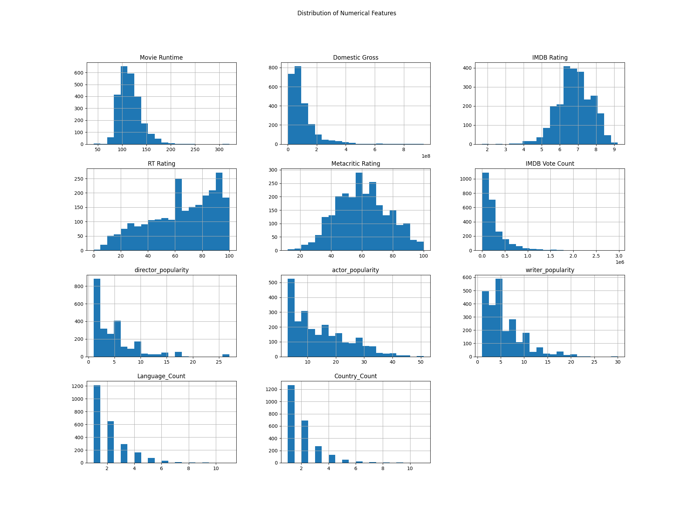
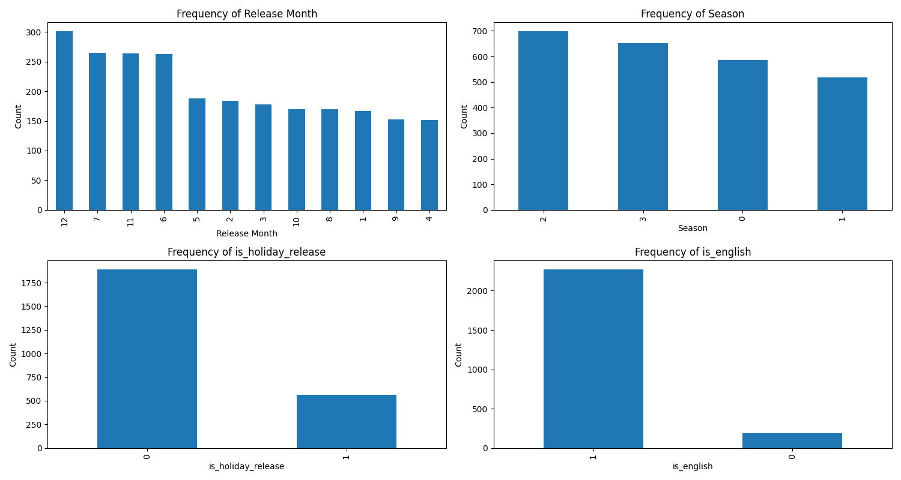
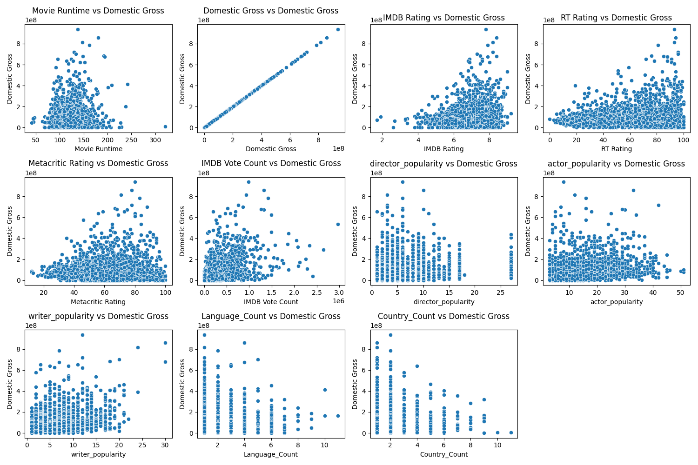
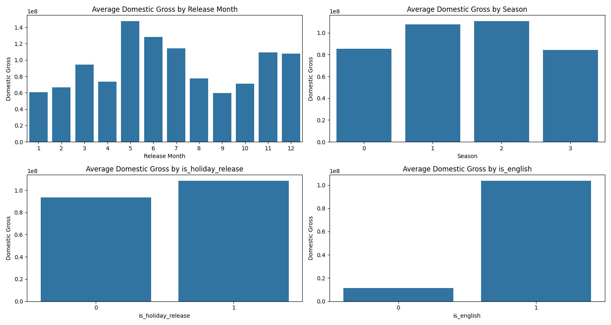
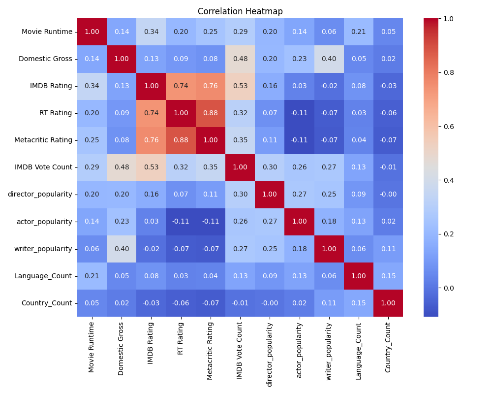
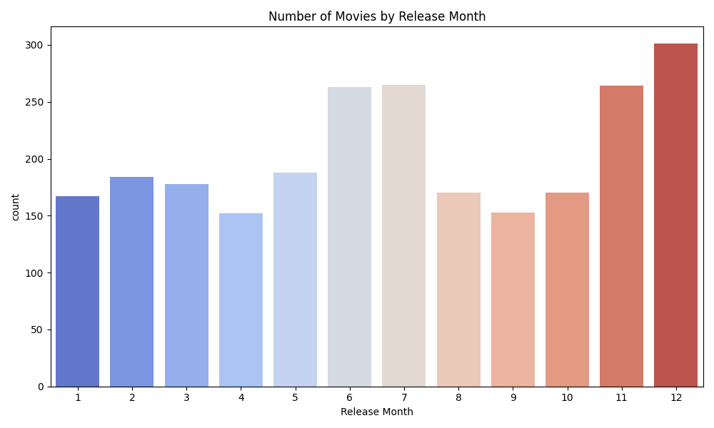
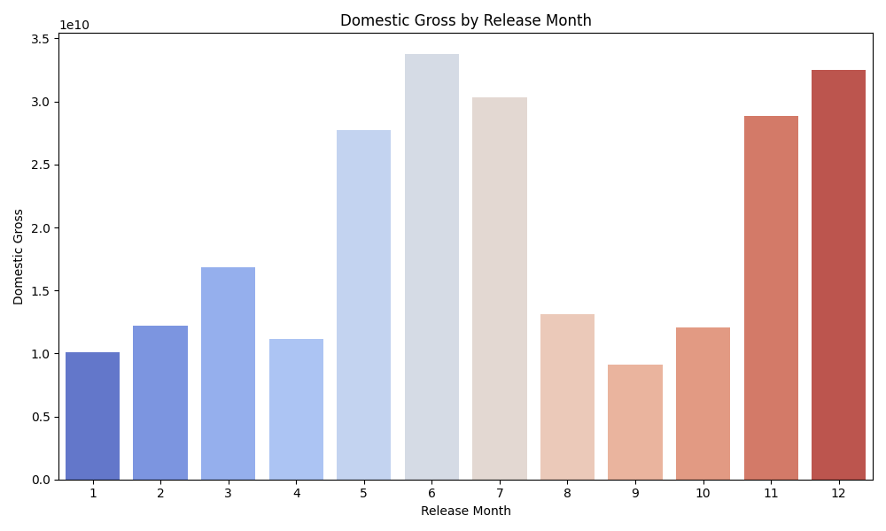
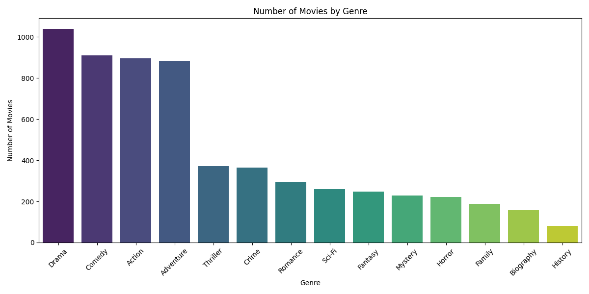
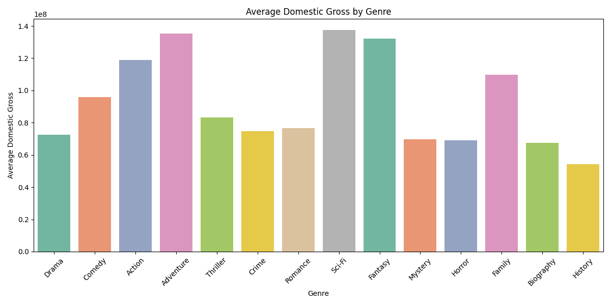

These graphs show the distribution of the numerical features like Movie Runtime, IMDB Rating, RT Rating, Metacritic Rating, IMDB Vote Count, director_popularity, actor_popularity, writer_popularity, Language_Count, and Country_Count.
These graph shows the frequency of each Categorical Variable
The graphs explore the relationship between numerical features and Domestic Gross. For example, plot IMDB Rating vs. Domestic Gross, Movie Runtime vs. Domestic Gross, etc.
These bar graphs compare the distribution of Domestic Gross across different categories. We can see the comparison between Domestic Gross for movies released in different seasons, for movies that are holiday releases vs. non-holiday releases.
This graph visualize the correlation between Domestic Gross and other numerical features.
Below two graphs show the Number of Movies and Average Domestic Gross by Month.
 This graph depicts the Number of Movies by Genre.
This graph depicts the Average Domestic Gross by Genre
